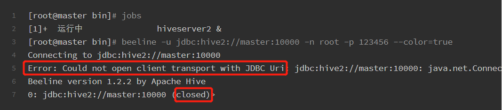

<!DOCTYPE html>
<html lang="en">

<head>
  <meta charset="utf-8" />
    
  <meta name="viewport" content="width=device-width, initial-scale=1, maximum-scale=1" />
  <title>
    20191219_1545_SPARK |  Shinnosuke
  </title>
  
  <link rel="shortcut icon" href="/images/Shinnosuke.jpg" />
  
  
<link rel="stylesheet" href="/css/style.css">
  
<script src="/js/pace.min.js"></script>


  

  

<meta name="generator" content="Hexo 4.1.1"></head>

</html>

<body>
  <div id="app">
    <main class="content">
      <section class="outer">
  <article id="post-20191219-1545-Spark" class="article article-type-post" itemscope
  itemprop="blogPost" data-scroll-reveal>

  <div class="article-inner">
    
    <header class="article-header">
       
<h1 class="article-title sea-center" style="border-left:0" itemprop="name">
  20191219_1545_SPARK
</h1>
  

    </header>
    

    
    <div class="article-meta">
      <a href="/2019/12/19/20191219-1545-Spark/" class="article-date">
  <time datetime="2019-12-19T08:18:41.000Z" itemprop="datePublished">2019-12-19</time>
</a>
      
    </div>
    

    
    
    <div class="tocbot"></div>


    

    <div class="article-entry" itemprop="articleBody">
      


      

      
      <h2 id="Spark-配置"><a href="#Spark-配置" class="headerlink" title="Spark 配置"></a>Spark 配置</h2><h3 id="01-Spark"><a href="#01-Spark" class="headerlink" title="01. Spark"></a>01. Spark</h3><ul>
<li>Repo Point<br><a href="http://archive.apache.org/dist/spark/spark-2.0.2/spark-2.0.2-bin-hadoop2.6.tgz" target="_blank" rel="noopener">spark-2.0.2-bin-hadoop2.6.tgz</a></li>
</ul>
<h3 id="02-环境配置"><a href="#02-环境配置" class="headerlink" title="02. 环境配置"></a>02. 环境配置</h3><h4 id="1-环境包-rz-至相关路径，分流至其它节点"><a href="#1-环境包-rz-至相关路径，分流至其它节点" class="headerlink" title="1. 环境包 rz 至相关路径，分流至其它节点"></a>1. 环境包 rz 至相关路径，分流至其它节点</h4><h5 id="源码分发"><a href="#源码分发" class="headerlink" title="源码分发"></a>源码分发</h5><figure class="highlight bash"><table><tr><td class="gutter"><pre><span class="line">1</span><br><span class="line">2</span><br></pre></td><td class="code"><pre><span class="line">scp -r /usr/<span class="built_in">local</span>/src/spark-2.0.2-bin-hadoop2.6 root@slave1:/usr/<span class="built_in">local</span>/src/</span><br><span class="line">scp -r /usr/<span class="built_in">local</span>/src/spark-2.0.2-bin-hadoop2.6 root@slave2:/usr/<span class="built_in">local</span>/src/</span><br></pre></td></tr></table></figure>

<h4 id="2-用户环境变量配置"><a href="#2-用户环境变量配置" class="headerlink" title="2. 用户环境变量配置"></a>2. 用户环境变量配置</h4><figure class="highlight bash"><table><tr><td class="gutter"><pre><span class="line">1</span><br><span class="line">2</span><br><span class="line">3</span><br><span class="line">4</span><br><span class="line">5</span><br><span class="line">6</span><br><span class="line">7</span><br><span class="line">8</span><br><span class="line">9</span><br><span class="line">10</span><br><span class="line">11</span><br><span class="line">12</span><br><span class="line">13</span><br><span class="line">14</span><br><span class="line">15</span><br><span class="line">16</span><br><span class="line">17</span><br><span class="line">18</span><br><span class="line">19</span><br><span class="line">20</span><br></pre></td><td class="code"><pre><span class="line"><span class="comment"># SET JAVA PATH</span></span><br><span class="line"><span class="built_in">export</span> JAVA_HOME=/usr/<span class="built_in">local</span>/src/jdk1.8.0_201</span><br><span class="line"><span class="built_in">export</span> JRE_HOME=<span class="variable">$&#123;JAVA_HOME&#125;</span>/jre</span><br><span class="line"><span class="built_in">export</span> CLASSPATH=.:<span class="variable">$&#123;JAVA_HOME&#125;</span>/lib:<span class="variable">$&#123;JRE_HOME&#125;</span>/lib</span><br><span class="line"><span class="built_in">export</span> PATH=<span class="variable">$&#123;JAVA_HOME&#125;</span>/bin:<span class="variable">$PATH</span></span><br><span class="line"><span class="comment"># SET HADOOP PATH</span></span><br><span class="line"><span class="built_in">export</span> HADOOP_HOME=/usr/<span class="built_in">local</span>/src/hadoop-2.6.1</span><br><span class="line"><span class="built_in">export</span> PATH=<span class="variable">$PATH</span>:<span class="variable">$HADOOP_HOME</span>/bin</span><br><span class="line"><span class="comment"># SET HIVE PATH</span></span><br><span class="line"><span class="built_in">export</span> HIVE_HOME=/usr/<span class="built_in">local</span>/src/apache-hive-1.2.2-bin</span><br><span class="line"><span class="built_in">export</span> PATH=<span class="variable">$PATH</span>:<span class="variable">$HIVE_HOME</span>/bin</span><br><span class="line"><span class="comment"># SET SCALA PATH</span></span><br><span class="line"><span class="built_in">export</span> SCALA_HOME=/usr/<span class="built_in">local</span>/src/scala-2.11.8</span><br><span class="line"><span class="built_in">export</span> PATH=<span class="variable">$PATH</span>:<span class="variable">$SCALA_HOME</span>/bin</span><br><span class="line"><span class="comment"># SET SPARK PATH</span></span><br><span class="line"><span class="built_in">export</span> SPARK_HOME=/usr/<span class="built_in">local</span>/src/spark-2.0.2-bin-hadoop2.6</span><br><span class="line"><span class="built_in">export</span> PATH=<span class="variable">$PATH</span>:<span class="variable">$SPARK_HOME</span>/bin:<span class="variable">$SPARK_HOME</span>/sbin</span><br><span class="line"></span><br><span class="line"><span class="comment"># SET INI PATH</span></span><br><span class="line"><span class="built_in">export</span> INI_PATH=/usr/<span class="built_in">local</span>/src</span><br></pre></td></tr></table></figure>
<h5 id="环境变量分发"><a href="#环境变量分发" class="headerlink" title="环境变量分发"></a>环境变量分发</h5><figure class="highlight bash"><table><tr><td class="gutter"><pre><span class="line">1</span><br><span class="line">2</span><br></pre></td><td class="code"><pre><span class="line">scp ~/.bashrc root@slave1:~/</span><br><span class="line">scp ~/.bashrc root@slave2:~/</span><br></pre></td></tr></table></figure>

<h4 id="3-修改-SPARK-源码环境配置文件、添加集群节点："><a href="#3-修改-SPARK-源码环境配置文件、添加集群节点：" class="headerlink" title="3. 修改 SPARK 源码环境配置文件、添加集群节点："></a>3. 修改 SPARK 源码环境配置文件、添加集群节点：</h4><figure class="highlight bash"><table><tr><td class="gutter"><pre><span class="line">1</span><br><span class="line">2</span><br><span class="line">3</span><br><span class="line">4</span><br><span class="line">5</span><br><span class="line">6</span><br><span class="line">7</span><br><span class="line">8</span><br><span class="line">9</span><br><span class="line">10</span><br><span class="line">11</span><br><span class="line">12</span><br><span class="line">13</span><br><span class="line">14</span><br><span class="line">15</span><br><span class="line">16</span><br><span class="line">17</span><br><span class="line">18</span><br><span class="line">19</span><br></pre></td><td class="code"><pre><span class="line"><span class="built_in">cd</span> /usr/<span class="built_in">local</span>/src/spark-2.0.2-bin-hadoop2.6/conf/</span><br><span class="line">mv spark-env.sh.template spark-env.sh</span><br><span class="line">vim spark-env.sh</span><br><span class="line"><span class="comment"># spark-env.sh</span></span><br><span class="line"><span class="built_in">export</span> SCALA_HOME=/usr/<span class="built_in">local</span>/src/scala-2.11.8</span><br><span class="line"><span class="built_in">export</span> JAVA_HOME=/usr/<span class="built_in">local</span>/src/jdk1.8.0_201</span><br><span class="line"><span class="built_in">export</span> HADOOP_HOME=/usr/<span class="built_in">local</span>/src/hadoop-2.6.1</span><br><span class="line"><span class="built_in">export</span> HADOOP_CONF_DIR=/usr/<span class="built_in">local</span>/src/hadoop-2.6.1/etc/hadoop</span><br><span class="line">SPARK_MASTER_IP=master</span><br><span class="line">SPARK_LOCAL_DIRS=/usr/<span class="built_in">local</span>/src/spark-2.0.2-bin-hadoop2.6</span><br><span class="line">SPARK_DRIVER_MEMORY=1G</span><br><span class="line"><span class="comment">######</span></span><br><span class="line"></span><br><span class="line">mv slaves.template slaves</span><br><span class="line">vim slaves</span><br><span class="line"><span class="comment"># slaves 添加集群节点</span></span><br><span class="line">slave1</span><br><span class="line">slave2</span><br><span class="line"><span class="comment">######</span></span><br></pre></td></tr></table></figure>

<h4 id="4-适配Spark-SQL"><a href="#4-适配Spark-SQL" class="headerlink" title="4. 适配Spark-SQL"></a>4. 适配Spark-SQL</h4><h5 id="MySQL相关配置和赋权见相关Blog，此处暂时不进行罗列：MySQL配置"><a href="#MySQL相关配置和赋权见相关Blog，此处暂时不进行罗列：MySQL配置" class="headerlink" title="MySQL相关配置和赋权见相关Blog，此处暂时不进行罗列：MySQL配置"></a>MySQL相关配置和赋权见相关Blog，此处暂时不进行罗列：<a href="">MySQL配置</a></h5><p>修改 $HIVE_HOME/bin下的Hive启动脚本 <strong><code>hive</code></strong>：<br><code>Tips</code> <strong>SPARK2.0</strong> 中没有 <code>${SPARK_HOME}/lib/spark-assembly-*.jar</code>，<strong>lib</strong>文件中的jar包已经被分成多个小的jar包在放置在 <code>${SPARK_HOME}/jars/</code> 下.</p>
<h5 id="修改前："><a href="#修改前：" class="headerlink" title="修改前："></a>修改前：</h5><figure class="highlight bash"><table><tr><td class="gutter"><pre><span class="line">1</span><br><span class="line">2</span><br><span class="line">3</span><br><span class="line">4</span><br><span class="line">5</span><br><span class="line">6</span><br></pre></td><td class="code"><pre><span class="line"><span class="comment"># add SPARK assembly jar to the classpath</span></span><br><span class="line"><span class="keyword">if</span> [[ -n <span class="string">"<span class="variable">$SPARK_HOME</span>"</span> ]]</span><br><span class="line"><span class="keyword">then</span></span><br><span class="line">  sparkAssemblyPath=`ls <span class="variable">$&#123;SPARK_HOME&#125;</span>/lib/spark-assembly-*.jar`</span><br><span class="line">  CLASSPATH=<span class="string">"<span class="variable">$&#123;CLASSPATH&#125;</span>:<span class="variable">$&#123;sparkAssemblyPath&#125;</span>"</span></span><br><span class="line"><span class="keyword">fi</span></span><br></pre></td></tr></table></figure>

<h5 id="YARN-Hadoop-2-0-内的："><a href="#YARN-Hadoop-2-0-内的：" class="headerlink" title="YARN (Hadoop 2.0) 内的："></a>YARN (Hadoop 2.0) 内的：</h5><figure class="highlight bash"><table><tr><td class="gutter"><pre><span class="line">1</span><br><span class="line">2</span><br><span class="line">3</span><br><span class="line">4</span><br><span class="line">5</span><br><span class="line">6</span><br></pre></td><td class="code"><pre><span class="line"><span class="comment"># add SPARK assembly jar to the classpath</span></span><br><span class="line"><span class="keyword">if</span> [[ -n <span class="string">"<span class="variable">$SPARK_HOME</span>"</span> ]]</span><br><span class="line"><span class="keyword">then</span></span><br><span class="line">  sparkAssemblyPath=`ls <span class="variable">$&#123;SPARK_HOME&#125;</span>/jars/*.jar`</span><br><span class="line">  CLASSPATH=<span class="string">"<span class="variable">$&#123;CLASSPATH&#125;</span>:<span class="variable">$&#123;sparkAssemblyPath&#125;</span>"</span></span><br><span class="line"><span class="keyword">fi</span></span><br></pre></td></tr></table></figure>

<h4 id="5-更新Hadoop-Yarn下的老版-jline-0-9-94-jar"><a href="#5-更新Hadoop-Yarn下的老版-jline-0-9-94-jar" class="headerlink" title="5. 更新Hadoop Yarn下的老版 jline-0.9.94.jar"></a>5. 更新Hadoop Yarn下的老版 <strong>jline-0.9.94.jar</strong></h4><figure class="highlight bash"><table><tr><td class="gutter"><pre><span class="line">1</span><br><span class="line">2</span><br><span class="line">3</span><br><span class="line">4</span><br></pre></td><td class="code"><pre><span class="line"><span class="comment"># Hive内较新版本的jline替换Hadoop内的OLD版本</span></span><br><span class="line"><span class="built_in">cd</span> <span class="variable">$HADOOP_HOME</span>/share/hadoop/yarn/lib/</span><br><span class="line">mv jline-0.9.94.jar jline-0.9.94.jar.old</span><br><span class="line">cp <span class="variable">$HIVE_HOME</span>/lib/jline-2.12.jar <span class="variable">$HADOOP_HOME</span>/share/hadoop/yarn/lib/</span><br></pre></td></tr></table></figure>

<h4 id="6-Hive集成Spark-SQL"><a href="#6-Hive集成Spark-SQL" class="headerlink" title="6. Hive集成Spark-SQL"></a>6. Hive集成Spark-SQL</h4><p><code>Tips</code> 这部分集成后的功能暂未进行操作</p>
<h5 id="hive-site-xml-内新增-Metastore-配置"><a href="#hive-site-xml-内新增-Metastore-配置" class="headerlink" title="hive-site.xml 内新增 Metastore 配置"></a>hive-site.xml 内新增 Metastore 配置</h5><figure class="highlight bash"><table><tr><td class="gutter"><pre><span class="line">1</span><br><span class="line">2</span><br><span class="line">3</span><br><span class="line">4</span><br><span class="line">5</span><br><span class="line">6</span><br><span class="line">7</span><br><span class="line">8</span><br><span class="line">9</span><br><span class="line">10</span><br><span class="line">11</span><br><span class="line">12</span><br><span class="line">13</span><br></pre></td><td class="code"><pre><span class="line">vim <span class="variable">$HIVE_HOME</span>/conf/hive-site.xml</span><br><span class="line"><span class="comment"># hive-site.xml 新增如下内容：</span></span><br><span class="line">&lt;property&gt;</span><br><span class="line">    &lt;name&gt;hive.metastore.uris&lt;/name&gt;</span><br><span class="line">    &lt;value&gt;thrift://hostname:9083&lt;/value&gt;</span><br><span class="line">&lt;/property&gt;</span><br><span class="line"><span class="comment">######</span></span><br><span class="line"></span><br><span class="line"><span class="comment"># 将Hive的配置文件拷贝给SPARK</span></span><br><span class="line">cp <span class="variable">$HIVE_HOME</span>/conf/hive-site.xml <span class="variable">$SPARK_HOME</span>/conf/</span><br><span class="line"></span><br><span class="line"><span class="comment"># 将MySQL下的jdbc驱动包拷贝给SPARK</span></span><br><span class="line">cp <span class="variable">$HIVE_HOME</span>/lib/mysql-connector-java-5.1.44.jar  <span class="variable">$SPARK_HOME</span>/jars/</span><br></pre></td></tr></table></figure>

<h4 id="7-SPARK集群启动-关闭"><a href="#7-SPARK集群启动-关闭" class="headerlink" title="7. SPARK集群启动/关闭"></a>7. SPARK集群启动/关闭</h4><figure class="highlight bash"><table><tr><td class="gutter"><pre><span class="line">1</span><br><span class="line">2</span><br><span class="line">3</span><br><span class="line">4</span><br><span class="line">5</span><br><span class="line">6</span><br></pre></td><td class="code"><pre><span class="line"><span class="built_in">cd</span> /usr/<span class="built_in">local</span>/src/spark-2.0.2-bin-hadoop2.6/sbin/</span><br><span class="line">./start-all.sh</span><br><span class="line"></span><br><span class="line"><span class="comment"># 关闭集群：</span></span><br><span class="line"><span class="built_in">cd</span> /usr/<span class="built_in">local</span>/src/spark-2.0.2-bin-hadoop2.6/sbin/</span><br><span class="line">./stop-all.sh</span><br></pre></td></tr></table></figure>

<h5 id="启动-Hive-metastore"><a href="#启动-Hive-metastore" class="headerlink" title="启动 Hive metastore"></a>启动 Hive metastore</h5><p><code>Metedata</code>元数据.<br><code>Metastore</code>Hive客户端连接Metastore元存储服务，Metastore再去连接MySQL来存取 <strong>元数据</strong>。多个客户端连接Hive时，只需要连接Metastore服务即可；即启动后可以用Java、Python等调用该jdbc</p>
<figure class="highlight bash"><table><tr><td class="gutter"><pre><span class="line">1</span><br><span class="line">2</span><br><span class="line">3</span><br><span class="line">4</span><br><span class="line">5</span><br><span class="line">6</span><br><span class="line">7</span><br></pre></td><td class="code"><pre><span class="line"><span class="comment"># hive --service metastore</span></span><br><span class="line"><span class="built_in">cd</span> <span class="variable">$HIVE_HOME</span>/bin/</span><br><span class="line">hive --service metastore  1&gt;/dev/null  2&gt;&amp;1  &amp;</span><br><span class="line"></span><br><span class="line"><span class="comment"># 启动Spark-SQL的shell交互界面</span></span><br><span class="line"><span class="built_in">cd</span> <span class="variable">$SPARK_HOME</span>/bin/</span><br><span class="line">spark-shell --master spark://master:7077</span><br></pre></td></tr></table></figure>
<h5 id="疑问"><a href="#疑问" class="headerlink" title="疑问"></a>疑问</h5><p><code>hiveserver2</code>HS2是一个服务端接口，使远程客户端可以执行对Hive的查询并返回结果，HS2提供了新的CLI：Beeline(基于SQLLine)，可以作为Hive jdbc Client端访问HS2.<br><code>hiveserver2</code> 和 <code>Metastore</code>一样同为Thrift Service，区别是否在于前者访问数据，后者访问元数据？？？</p>
<ul>
<li>网上有一部分解释：</li>
</ul>
<ol>
<li><p>若有在 <code>hive-site.xml</code> 中配置 <code>hive.metastore.uris</code>，则 <code>hiveserver2</code> 启动时会去连接配置好的 Metastore 服务(故需开启Metastore服务，其余jdbc访问也需开启该服务)，这种方式最为常用；</p>
</li>
<li><p>配置情况下未启动 <code>Metastore</code>，本地Beeline Client连接会失败； </p>
</li>
<li><p>若未配置，则启动HS2时，会先启动一个 <code>Metastore</code> 服务，然后再启动HS2，便于后续Beeline CLI的连接.</p>
</li>
<li></li>
</ol>
<h5 id="回顾下Beeline连接Hive"><a href="#回顾下Beeline连接Hive" class="headerlink" title="回顾下Beeline连接Hive"></a>回顾下Beeline连接Hive</h5><figure class="highlight bash"><table><tr><td class="gutter"><pre><span class="line">1</span><br><span class="line">2</span><br><span class="line">3</span><br><span class="line">4</span><br><span class="line">5</span><br><span class="line">6</span><br><span class="line">7</span><br><span class="line">8</span><br></pre></td><td class="code"><pre><span class="line"><span class="comment"># 配置了hive.metastore.uris后需开启 Metastore</span></span><br><span class="line"><span class="comment"># 后缀为重定向，需百度解决</span></span><br><span class="line">hive --service metastore  1&gt;/dev/null  2&gt;&amp;1  &amp;</span><br><span class="line"><span class="comment"># beeline方式连接Hive，默认端口为10000</span></span><br><span class="line">hive --service hiveserver2</span><br><span class="line"><span class="comment">#beeline</span></span><br><span class="line"><span class="comment">#!connect jdbc:hive2://master:10000 root 123456</span></span><br><span class="line">beeline -u jdbc:hive2://master:10000 -n root -p 123456 --color=<span class="literal">true</span></span><br></pre></td></tr></table></figure>

<p><code>Tips</code> 可以单独启动 SPARK 集群，但此时无ResourceManager/NodeManager等进程！！！</p>

      
      <!-- 打赏 -->
      
    </div>
    <footer class="article-footer">
      <a data-url="http://yoursite.com/2019/12/19/20191219-1545-Spark/" data-id="ck4nzub3j00079ou689sfadvu"
        class="article-share-link">Share</a>
      
  <ul class="article-tag-list" itemprop="keywords"><li class="article-tag-list-item"><a class="article-tag-list-link" href="/tags/Spark/" rel="tag">Spark</a></li></ul>

    </footer>

  </div>

  
  
  <nav class="article-nav">
    
      <a href="/2019/12/19/20191219-2347-Hadoop-2-6-1/" class="article-nav-link">
        <strong class="article-nav-caption">POST_PREV</strong>
        <div class="article-nav-title">
          
            20191219-2347_Hadoop-2.6.1
          
        </div>
      </a>
    
    
      <a href="/2019/12/19/20191219-1545-ZooKeeper-Kafka/" class="article-nav-link">
        <strong class="article-nav-caption">POST_NEXT</strong>
        <div class="article-nav-title">20191219_1545_ZooKeeper-Kafka</div>
      </a>
    
  </nav>


  

  

  
  
  

</article>
</section>
      <footer class="footer">
  <div class="outer">
    <ul class="list-inline">
      <li>
        &copy;
        2019
        Shinnosuke Guo
      </li>
      <li>
        
        
        
        <a href="https://hexo.io" target="_blank">Hexo</a> Theme <a href="https://github.com/Shen-Yu/hexo-theme-ayer" target="_blank">Ayer</a> by shenyu
        
      </li>
    </ul>
    <ul class="list-inline">
      <li>
        
      </li>
      <li>
        <!-- cnzz统计 -->
        
      </li>
    </ul>
  </div>
</footer>
    <div class="to_top">
        <div class="totop" id="totop">
  <i class="ri-arrow-up-line"></i>
</div>
      </div>
    </main>
    
    <aside class="sidebar">
      
        <button class="navbar-toggle"></button>
<nav class="navbar">
  
  <div class="logo">
    <a href="/"></a>
  </div>
  
  <ul class="nav nav-main">
    
    <li class="nav-item">
      <a class="nav-item-link" href="/">Main</a>
    </li>
    
    <li class="nav-item">
      <a class="nav-item-link" href="/archives">Archives</a>
    </li>
    
    <li class="nav-item">
      <a class="nav-item-link" href="/tags">Tags</a>
    </li>
    
    <li class="nav-item">
      <a class="nav-item-link" href="https://github.com/shinnosuke1028" target="_blank" rel="noopener">About</a>
    </li>
    
  </ul>
</nav>
<nav class="navbar navbar-bottom">
  <ul class="nav">
    <li class="nav-item">
      
      <a class="nav-item-link nav-item-search"  title="Search">
        <i class="ri-search-line"></i>
      </a>
      
      
      <a class="nav-item-link" target="_blank" href="/atom.xml" title="RSS Feed">
        <i class="ri-rss-line"></i>
      </a>
      
    </li>
  </ul>
</nav>
<div class="search-form-wrap">
  <div class="local-search local-search-plugin">
  <input type="search" id="local-search-input" class="local-search-input" placeholder="Search...">
  <div id="local-search-result" class="local-search-result"></div>
</div>
</div>
      </aside>
      <div id="mask"></div>

<!-- #reward -->
<div id="reward">
  <span class="close"><i class="ri-close-line"></i></span>
  <p class="reward-p"><i class="ri-cup-line"></i>请我喝杯咖啡吧~</p>
  <div class="reward-box">
    
    
  </div>
</div>
      
<script src="/js/jquery-2.0.3.min.js"></script>


<script src="/js/jquery.justifiedGallery.min.js"></script>


<script src="/js/lazyload.min.js"></script>


<script src="/js/busuanzi-2.3.pure.min.js"></script>


  
<script src="/js/tocbot.min.js"></script>

  <script>
    // Tocbot_v4.7.0  http://tscanlin.github.io/tocbot/
    tocbot.init({
      tocSelector: '.tocbot',
      contentSelector: '.article-entry',
      headingSelector: 'h1, h2, h3, h4, h5, h6',
      hasInnerContainers: true,
      scrollSmooth: true,
      positionFixedSelector: '.tocbot',
      positionFixedClass: 'is-position-fixed',
      fixedSidebarOffset: 'auto',
    });
  </script>


<script>
  var ayerConfig = {
    mathjax: false
  }
</script>


<script src="/js/ayer.js"></script>


<script src="https://cdn.jsdelivr.net/npm/jquery-modal@0.9.2/jquery.modal.min.js"></script>
<link rel="stylesheet" href="https://cdn.jsdelivr.net/npm/jquery-modal@0.9.2/jquery.modal.min.css">


<script type="text/javascript" src="https://js.users.51.la/20544303.js"></script>
  
  
  </div>
</body>

</html>